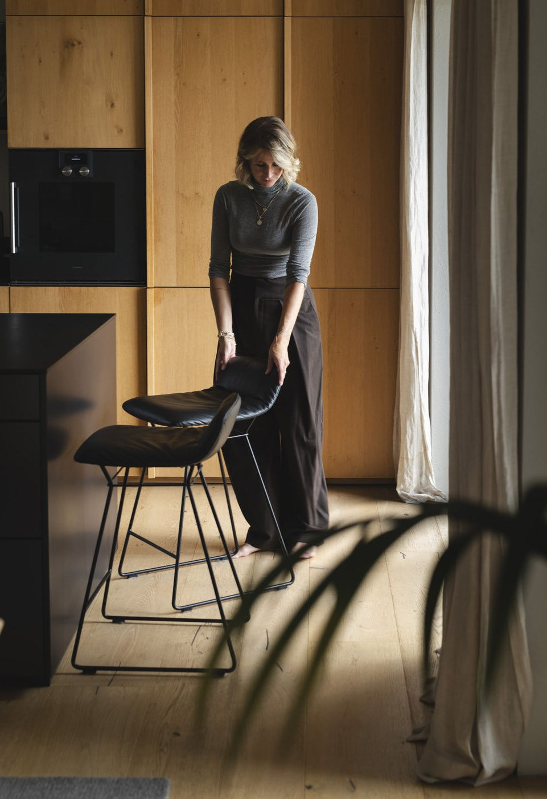
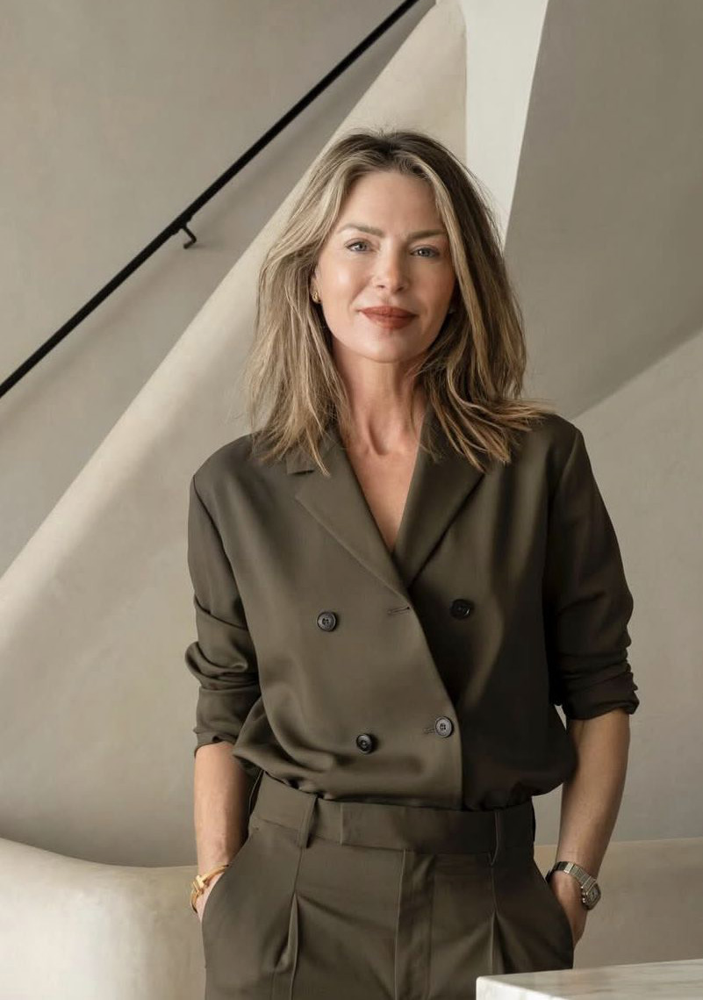
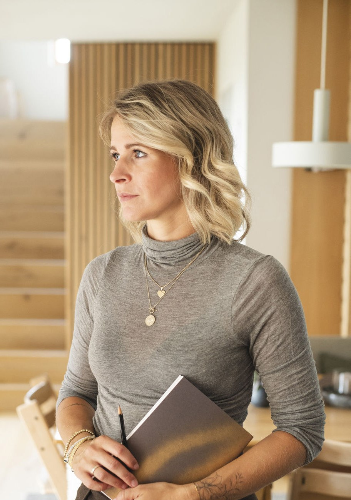
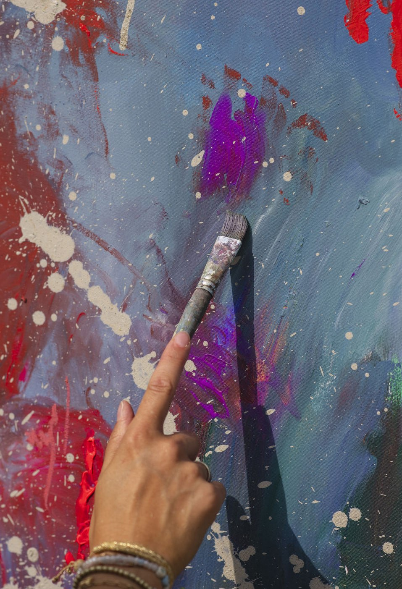
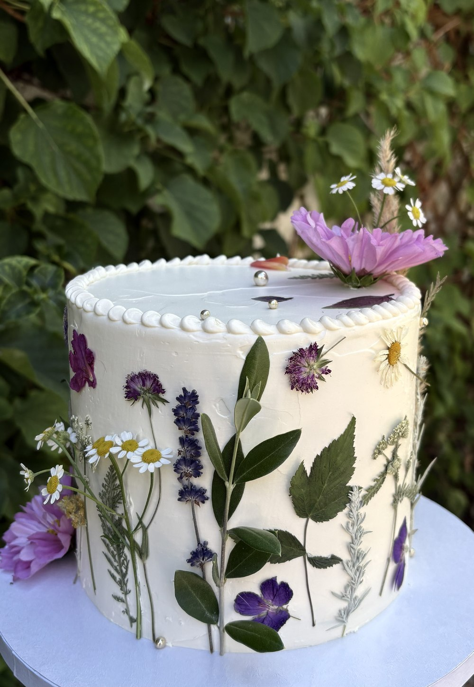
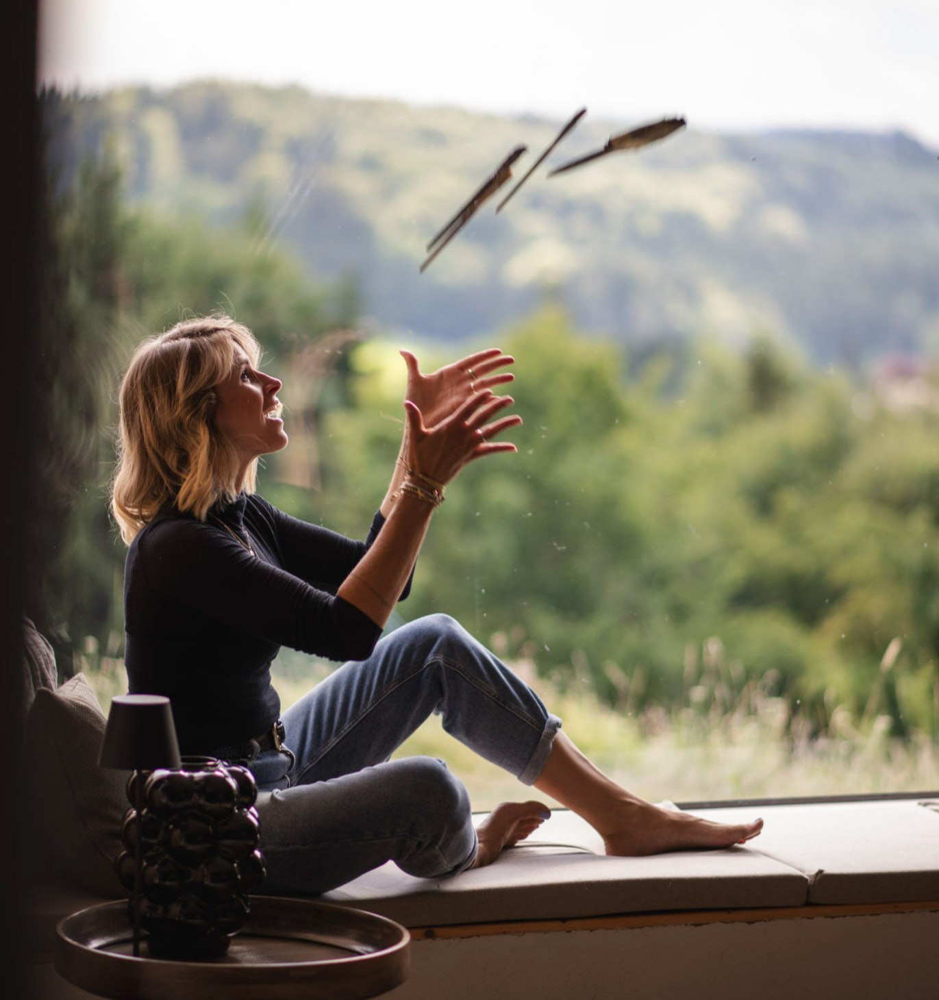

Interior
Design.


Gestaltung wird für mich dann besonders, wenn sie etwas über die Menschen dahinter erzählt. Deshalb verbinde ich meine Leidenschaft für Kunst und Design mit meinem Wissen über Marken, Marketing und Persönlichkeit. Daraus entstehen individuelle Räume, Bilder und Konzepte, die nicht nur schön aussehen, sondern sich auch wirklich stimmig anfühlen.
Seit mehr als 15 Jahren unterstütze ich Unternehmen dabei, ihre Identität zu finden, zu schärfen und nach außen sichtbar zu machen. Gleichzeitig gestalte ich private Räume und persönliche Kunstwerke, die genau zu den Menschen passen, für die sie entstehen.
„Design formt Identität – Kunst und Raum machen sie erlebbar.“
Leistungsportfolio




„Trust the process of creativity“
Workshops

Basic Homestyling
Family / Kids / Friends
Workshop
Team Building
„Kreativität beginnt dort wo wir ins Tun kommen“
About
Ich bin kreativ, stilsicher, genau, offen und unkompliziert – und weiß heute ziemlich gut, was zu mir passt und was ich will.
Ich bin östlich von Graz zuhause – gemeinsam mit meinem Mann, unseren drei Kindern, einem kleinen Münsterländer-Mischling und einem kleinen Haufen glücklicher Hühner.
Ich liebe die Natur, Sport, Kleidung, Architektur, Möbel und eigentlich alles, was schön aussieht und ein bisschen aus der Reihe tanzt. Ich mag Dinge mit Charakter und dem gewissen Etwas – Dinge, die auffallen und nicht aussehen wie alles andere. Mein Zugang: Weniger und dafür Besonders ist mehr.
Ich habe viel ausprobiert, gelernt und gemacht – und genau das ist heute meine Basis: ein Bachelorstudium in Marketing & Sales Management, ein Masterstudium in Sales Management, ein Masterstudium in Wirtschaftspädagogik und eine Ausbildung zur Konditormeisterin. Eine Mischung aus Strategie, Kommunikation, Gestaltung, Handwerk und einer großen Liebe zum Detail. Man könnte sagen: Ich kann Konzepte entwickeln und Torten gerade einstreichen. ;)
Beruflich bringe ich rund 17 Jahre Agenturerfahrung als Projektleiterin und Consultant unter anderem bei moodley brand identity und look! design mit: von Eventmanagement über Markenentwicklung und Branding bis hin zu Interior Design und allem, was Unternehmen, Marken und Räumen mehr Persönlichkeit gibt.
Und nun freue ich mich auf eure kleinen und großen Projekte – und darauf, dass sie hier schon bald ihren Platz finden.
„Wähle einen Beruf, den du liebst, und du brauchst nie wieder zu arbeiten“Konfuzius